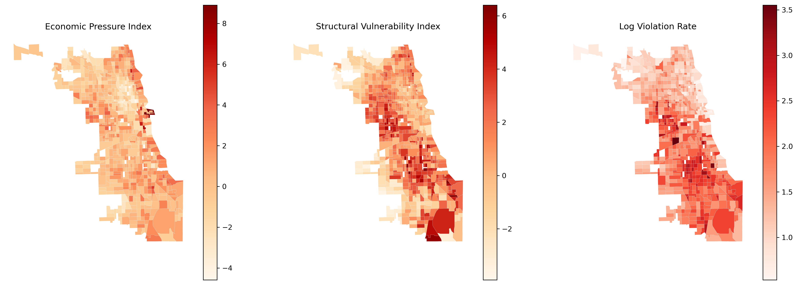
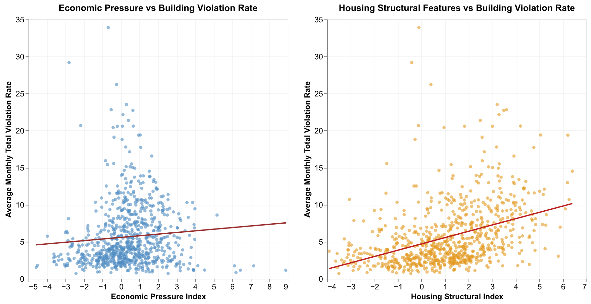

Chicago Housing Risk Analysis: Economic and Housing Structural Determinants of Building Violations
Group Information
Group Number: 46
Course: Section4 – PPHA 30538
Group Members: Susan Zhang (GitHub: SusanYaranZhang, Section 4); Weiyi Wang (GitHub: weiyiwang-611, Section 4); Yuqian Sui (GitHub: yqsui, Section 4)
Research Question
- How do housing violations vary across time and neighborhoods?
- To what extent are these patterns associated with economic pressure and housing structural features?
Data and Approach
Data Resources
The building violations dataset is sourced from the City of Chicago Data Portal, contains reported building violations with dates, descriptions & codes, and location information: building_violations_raw.
The following census resources are drawn from United States Census Bureau, American Community Survey Most recent 5-year release, Cook County, Illinois:
For economic pressure: median_household_income_B19013.csv and rent_burden_B25070.csv.
For housing structural features: poverty_status_B17001.csv, tenure_owner_renter_B25003.csv, and units_in_structure_B25024.csv.
Data Progress
- Building Violations (City of Chicago)
- Clean Data: Time window filtering, GEOID Standardization, quality checks, and tract-level structure
- Violation Rate: We converted raw violation counts into a standardized rate per 1,000 units, using rate = 1,000 × (count / total units), which ensures that higher values indicate more violations relative to local building stock, enabling meaningful spatial and temporal comparisons.
- Census data for Economic Pressure and Housing Structural Features
- Clean Data: GEOID standardization, column & label cleaning, variable selection (estimate only), and missing data handling
- Standardization: Created Economic Pressure Index and Housing Structural Index with z-scores. Economic Pressure Index: rent_burden_z-index (share of households spending ≥30%) - income_z-index (direction reversa). Housing Structural Index: poverty_z-index (share of population below poverty line) + tenure_z-index (share of renter) + housing_age_z-index (share of units built in 1939 or earlier).
Weakness and Difficulties
- Relative rather than absolute measure: Because we use z-score standardization, the index captures relative differences within Cook County rather than absolute levels of housing pressure.
- Equal weighting assumption: By aggregating standardized variables, we implicitly assume equal contribution of each component, although their real-world impacts on housing pressure may differ.
Static Visualization
Spatial Distribution

Violation rates are clearly spatially clustered, with higher values concentrated in the southern part of the city. Structural vulnerability exhibits a similar pattern of concentration, while economic pressure appears more spatially diffuse. This suggests that violations are more closely aligned with structural housing conditions than with economic pressure alone.Correlation Analysis

The plot indicates that housing structural vulnerability is a more consistent predictor of building violation rates than neighborhood economic pressure: left plot shows a weak positive linear trend between the Economic Pressure variable and average monthly building violation rate, while right plot shows a moderately stronger positive linear trend between the Housing Structural Feature and average monthly building violation rate.
Policy Extention
These map illustrates the number of risk dimensions in which each tract falls within the top 25 percent. The triple-burden hotspots where economic pressure, structural vulnerability, and violation rates overlap are geographically concentrated in the southern and southwestern parts of the city. It identifies neighborhoods where multiple housing risks co-occur and may require targeted policy attention.
Streamlit
Distribution
- Temporal
A clear break appears in March–April 2020, plausibly reflecting COVID-19 disruptions to inspections after the stay-at-home order. Patterns stabilize from mid-2021, and average rates trend downward through 2024, likely combining real changes and enforcement/recording dynamics. - Spatial
Violation rates show persistent within-city imbalance: hotspots repeatedly cluster in Chicago’s southwest corridor, while north-side and lakefront areas remain relatively low. Relative-to-city maps place hotspots in similar locations, suggesting stable spatial concentration rather than random fluctuation.
Relationship to Research Questions
These patterns motivate two questions: Firstly, why do some tracts persistently exhibit higher violation intensity than others; Secondly, to what extent do tract-level economic pressure and structural vulnerability explain the location and persistence of hotspots.